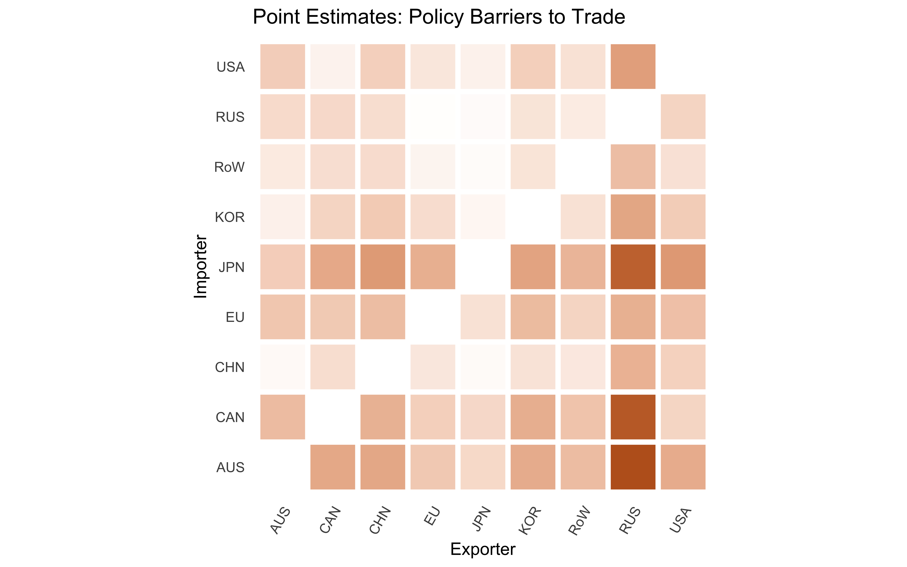
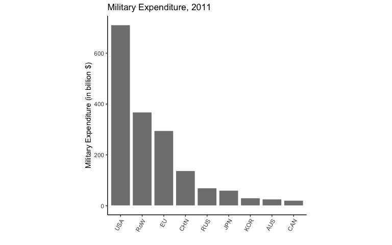

Trade Policy in the Shadow of Power
Quantifying Military Coercion in the International System
9 April 2020
Brendan Cooley
Ph.D. Candidate
Princeton University
bcooley (at) princeton.edu
These slides available at brendancooley.com/tpsp
Introduction
Power and Preferences
“A has power over B to the extent that he can get B to do something that B would not otherwise do.”
- Dahl (1957)
Power in Anarchy
- Anarchy: no higher authority to compel states to resolve disputes peacefully
- Anarchy \(\implies\) powerful governments can impose policies on others by force
- Bargaining critique: policies adjust to reflect shadow of power
- Brito and Intrilagator (1985), Fearon (1995), Art (1996); Powell (1999)
Detecting the Exercise of Power: An Inference Problem
- Dahl: What would B do in the absence of A’s power?
- Do observed policies reflect preferences of the governments that adopted them or constraints of anarchy?
Trade Policy and Gunboat Diplomacy
What Do Governments Want?
- Protectionism at home (Grossman and Helpman 1994; Gawande, Krishna, and Olarreaga 2009)
- Domestic distributional conflict: Mayer (1984), Rogowski (1987); Grossman and Helpman (1994)
- Fiscal capacity: Rodrik (2008), Queralt (2015)
- Openness abroad (Grossman 2016)
- Market access externalities: Ossa (2011), Ossa (2012)
- Lobbying and Trade Policy: Firms pressure governments to negotiate reductions in trade barriers abroad (Osgood 2016; Kim 2017)
Conflicts of Interest and Gunboat Diplomacy
- Powerful governments impose openness on weaker counterparts
- Viner (1948), Findlay and O’Rourke (2007)
- Peacetime regimes: empire, hegemony, and hierarchy
- Gallagher and Robinson (1953), Krasner (1976), Gilpin (1981), Kindleberger (1986), Lake (2007)
- Economic effects: Berger et al. (2013)
Does Trade Policy Matter?
- Tariffs small, aggregate policy-induced trade frictions large
- ~order of magnitude larger than tariffs (Cooley 2019) (barriers)
- Welfare effects of trade frictions
- Autor, Dorn, and Hanson (2013), Costinot and Rodríguez-Clare (2015), Goldberg and Pavcnik (2016)
Anarchy and Inference: Approach
A Coercive International Political Economy
\[ \left\{ \bm{\theta}, \bm{M} \right\} \rightarrow \bm{\tau} \]
- Observables
- \(\bm{M}\) – governments’ military endowment (expenditure)
- \(\bm{\tau}\) – governments’ trade policies
- Unobservables (\(\bm{\theta}\))
- \(\bm{v}\) – governments’ preferences for protectionism
- \(\gamma\) – returns to military force in coercive capacity
- \(\alpha\) – geographic loss of strength gradient (Boulding 1962; Bruce Bueno de Mesquita 1980; Diehl 1985; Lemke 1995; Gartzke and Braithwaite 2011; Markowitz and Fariss 2013)
Estimation: \(\left\{ \bm{\tau}, \bm{M} \right\} \rightarrow \tilde{\bm{\theta}}\)
Counterfactuals: \(\left\{ \bm{\theta}^\prime, \bm{M}^\prime \right\} \rightarrow \bm{\tau}^\prime\)
- Shadow of power
- Effect of changing military endowments on trade policy
- Liberal/commercial peace
- Effect of changing preferences for openness on probability of war
Results: Preview
Economic Consequences of Coercion: Increases value of global trade 63 percent
Results: Preview
Economic Consequences of Coercion: Increases value of global trade 63 percent
Data
Economic Effects of Endogenous Trade Frictions
Choice variables
\[ \bm{\tau} = \begin{pmatrix} \tau_{11} & \cdots & \cdots & \cdots & \tau_{1N} \\ \vdots & \ddots & \vdots & \iddots & \vdots \\ \vdots & \cdots & \tau_{ij} & \cdots & \vdots \\ \vdots & \iddots & \vdots & \ddots & \vdots \\ \tau_{N1} & \cdots & \cdots & \cdots & \tau_{NN} \end{pmatrix} \]
- \(\tau_{ij}\) – tax government \(i\) imposes on imports from country \(j\)
- \(\bm{\tau}_i\) – government \(i\)’s policy vector
- Measurement: Cooley (2019) (magnitudes)
Economy
\[ h(\bm{\tau}; \bm{Z}_m, \bm{\theta}_m) \rightarrow \begin{pmatrix} w_1 \\ \vdots \\ w_N \end{pmatrix} = \bm{w} \]
- Model Details
- \(\bm{Z}_h\) – economic data
- national accounts, price levels, trade flows, freight costs
- \(\bm{\theta}_m\) – economic parameters (calibration)
Coercive International Political Economy: Data
Sample Countries

- Year: 2011
- RoW: Aggregate outside economy
- cannot coerce or be coerced
- Non-ROW countries: 72 percent of world GDP
- EU: Aggregate trade policies and military capacities
War Costs
\[ c_{ij} \sim F \left( \bm{\theta}_m; \bm{Z}_m \right) \]
- \(c_{ij}\) – cost government \(i\) pays to attack government \(j\)
- \(\bm{Z}_m\) – observable dyadic features
- \(M_{i} / M_{j}\) – military expenditure ratio (data)
- \(W_{ij}\) – centroid-centroid distance between \(i\) and \(j\)
- \(\bm{\theta}_m\) – estimand
Thank You
Table of Contents
Appendix
- test
Appendix
Bargaining, Trade, and War
Institutionalized Bargaining
- Models of GATT/WTO: reciprocity and nondiscriminination
- Grossman and Helpman (1995), Maggi (1999), Bagwell and Staiger (1999)
- Institutions and incentive compatibility: war as an outside option (Powell 1994)
Trade as Means
- Governments pursue “political” ends (e.g. security), trade used as coercive instrument
- Hirschman (1945), Gowa and Mansfield (1993), Martin, Mayer, and Thoenig (2012), Seitz, Tarasov, and Zakharenko (2015)
- Security and power are themselves means to achieve other ends
Power and Exchange
- Prices and power in the marketplace
- Skaperdas (2001), Piccione and Rubinstein (2007), Garfinkel, Skaperdas, and Syropoulos (2011), Carroll (2018)
- Trade frictions as choice variable here
Estimated Trade Frictions

Economy (Consumption)
Consumer’s Problem
\[\begin{equation*} \begin{split} \max & \quad U_i = Q_i^{\nu_i} S_i^{1 - \nu_i} \\ \text{subject to} & \quad P_i Q_i + P_i^s S_i \leq w_i L_i \end{split} \end{equation*}\]
CES Preferences over Tradable Varieties
\[ Q_i = \left( \int_{[0,1]} \alpha_{h(\omega)}^{\frac{1}{\sigma}} q_i(\omega)^{\frac{\sigma - 1}{\sigma}} d \omega \right)^{\frac{\sigma}{\sigma - 1}} \]
Tradable Price Index
\[ P_i = \left( \int_{[0,1]} \alpha_{h(\omega)} p_i(\omega)^{1 - \sigma} d \omega \right)^{\frac{1}{1 - \sigma}} \]
Expenditure on Tradables
\[ E_i^q = \nu_i I_i + D_i = P_i Q_i^\star \]
Economy (Production)
Costs
\[\begin{equation} \label{eq:c} c_i = w_i^{1 - \beta} P_i^{\beta} \end{equation}\]
- \(w_i\) - cost of labor
- \(P_i\) - cost of composite intermediate good
- equivalent to composite consumption good
\[ E_i^x = \beta X_i \]
Local Prices
\[ p_{ii}(\omega) = \frac{c_i}{z_i(\omega)} \]
Technology (Fréchet)
\[ F_i(z) = \text{Pr} \left\{ z_i(\omega) \leq z \right\} = \exp \left\{ - T_i z^{-\theta} \right\} \]
Economy (Equilibrium)
Total Expenditure on Tradables
\[ X_i = \underbrace{E_i^q + E_i^x}_{E_i} - D_i \]
Trade Shares
\[ \Omega_{ij}^\star = \left\{ \omega \in [0,1] \left. \right\vert p_{ij}(\omega) \leq \min_{k \neq j} \left\{ p_{ik} \right\} \right\} \]
\[ \lambda_{ij}(\boldsymbol{w}) = \frac{1}{E_i} \int_{\Omega_{ij}^\star} p_{ij}(\omega) q_i \left( p_{ij} (\omega) \right) d \omega \]
Market Clearing
\[ X_i = \sum_{j=1}^N \lambda_{ji}(\boldsymbol{w}) E_j \]
Economy (Equilibrium in Changes)
\[ \hat{r}_i = \frac{1}{r_i} \left( E_i \hat{E}_i(\hat{\bm{w}}) - \sum_j X_{ij}^{\text{cif}} \hat{X}_{ij}^{\text{cif}}(\hat{\bm{w}}) \right) \] \[ \hat{w}_i = \frac{1}{\nu_i w_i L_i} \left( \sum_j \left( (1 - \beta) X_{ji}^{\text{cif}} \hat{X}_{ji}^{\text{cif}}(\hat{\bm{w}}) \right) + (1 - \nu_i) r_i \hat{r}_i(\hat{\bm{w}}) \right) \] \[ \hat{E}_i(\hat{\bm{w}}) = \frac{1}{E_i} \left( E_i^q \hat{E}_i^q(\hat{\bm{w}}) + E_i^x \hat{E}_i^x(\hat{\bm{w}}) \right) \] \[ \hat{x}_{ij}(\hat{\bm{w}}) = \left( \hat{\tau}_{ij} \hat{w}_j^{1 - \beta} \hat{P}_j(\hat{\bm{w}})^\beta \right)^{-\theta} \hat{P}_i(\hat{\bm{w}})^{\theta} \] \[ \hat{P}_i(\hat{\bm{w}}) = \left( \sum_j x_{ij} \left( \hat{\tau}_{ij} \hat{w}_j^{1 - \beta} \hat{P}_j(\hat{\bm{w}})^\beta \right)^{-\theta} \right)^{-\frac{1}{\theta}} \] \[ 1 = \sum_i y_i \hat{w}_i \]
Economy (Calibration I)
- Trade Flows: BACI
- National Accounts: OECD and WIOD
Parameters
\[ \bm{\theta}_h = \left( \bm{\nu}, \beta, \theta \right) \]
- \(\nu_i\) – share of consumer expenditure spent on tradables (World Bank ICP)
- \(\beta\) – share of intermediate goods in imports (WIOD)
- Average across countries in sample (0.86)
- \(\theta\) – trade elasticity
- Set to 6 (Head and Mayer 2014)
Economy (Calibration II)
Deficits (Dekle, Eaton, and Kortum 2007)
- \(\bm{D}\) – trade deficits
- Equilibrium in changes \[ \hat{h}(\hat{\bm{\tau}}, \hat{\bm{D}}; \bm{\theta}_h) \]
- Purge deficits before analysis \[ \hat{h}(\hat{\bm{\tau}}, \bm{0}; \bm{\theta}_h) \rightarrow \hat{\bm{w}}_{-D} \]
- Recompute associated trade flows, price levels, etc
Military Expenditure

Reduced Form Evidence (Interpretive Model)
Bilateral Nash Bargaining over Trade Policy
\[\begin{equation} \begin{split} x^\star \in \argmax_x & \quad \left( u_1(x) - w_1(M_1 / M_2) \right) \left( u_2(x) - w_2(M_2 / M_1) \right) \\ \text{subject to} & \quad u_1(x) \geq w_1(M_1 / M_2) \\ & \quad u_2(x) \geq w_2(M_2 / M_1) . \end{split} \end{equation}\]
Result: Government 1’s utility increasing in \(M_1\)
Empirical Analogue
\[ \frac{u_1(x^\star; M_1, M_2)}{u_1(1)} \iff \frac{ V_i \left( h(\bm{\tau}) \right) }{ V_i \left( h(\bm{1}_j; \bm{\tau}_{-j}) \right) } \]
Empirical Conquest Value: \(V_i \left( h(\bm{1}_j; \bm{\tau}_{-j}) \right)\)
Reduced Form Evidence (Data)
Reduced Form Evidence (Data)
| Inverse Conquest Values and Military Capability Ratios | ||||
|---|---|---|---|---|
| Base | Base (Attacker FE) | Loss of Strength | Loss of Strength (Attacker FE) | |
| Log Mil Capability Ratio | 0.016*** | 0.033*** | 0.026 | 0.045 |
| (0.004) | (0.004) | (0.052) | (0.039) | |
| Log Distance | 0.003 | 0.002 | ||
| (0.010) | (0.008) | |||
| (Log Mil Capability Ratio) X (Log Distance) | -0.001 | -0.001 | ||
| (0.006) | (0.004) | |||
| Num.Obs. | 56 | 56 | 56 | 56 |
| R2 | 0.247 | 0.676 | 0.249 | 0.677 |
| R2 Adj. | 0.233 | 0.621 | 0.205 | 0.605 |
| Attacker FE? | ✓ | ✓ | ||
| * p < 0.1, ** p < 0.05, *** p < 0.01 | ||||
Art, Robert J. 1996. “American foreign policy and the fungibility of force.” Security Studies 5 (4): 7–42.
Autor, David H, David Dorn, and Gordon H Hanson. 2013. “The China syndrome: Local labor market effects of import competition in the United States.” The American Economic Review 103 (6): 2121–68.
Bagwell, Kyle, and Robert W. Staiger. 1999. “An economic theory of GATT.” American Economic Review 89 (1): 215–48.
Berger, Daniel, William Easterly, Nathan Nunn, and Shanker Satyanath. 2013. “Commercial imperialism? Political influence and trade during the Cold War.” The American Economic Review 103 (2): 863–96.
Boulding, Kenneth E. 1962. “Conflict and defense: A general theory.” Harper.
Brito, Dagobert L., and Michael D. Intrilagator. 1985. “Conflict, War, and Redistribution.” American Political Science Review 79 (4).
Bruce Bueno de Mesquita. 1980. “An Expected Utility Theory of International Conflict.” The American Political Science Review 74 (4): 917–31.
Carroll, Robert J. 2018. “War and Peace in the Marketplace.”
Cooley, Brendan. 2019. “Estimating Policy Barriers to Trade.”
Costinot, Arnaud, and Andrés Rodríguez-Clare. 2015. “Trade Theory with Numbers: Quantifying the Consequences of Globalization.” Handbook of International Economics 4: 197–261.
Dahl, Robert A. 1957. “The Concept of Power.” Behavioral Science 2 (3): 201–15.
Dekle, Robert, Jonathan Eaton, and Samuel Kortum. 2007. “Unbalanced trade.” AEA Papers and Proceedings 97 (2): 351–55.
Diehl, Paul F. 1985. “Continuity and Military Escalation in Major Power Rivalries, 1816-1980.” The Journal of Politics 47 (4): 1203–11.
Fearon, James D. 1995. “Rationalist explanations for war.” International Organization 49 (03): 379–414.
Findlay, Ronald., and Kevin H. O’Rourke. 2007. Power and plenty : trade, war, and the world economy in the second millennium. Princeton University Press.
Gallagher, John, and Ronald Robinson. 1953. “The Imperialism of Free Trade.” The Economic History Review 6 (1): 1–15.
Garfinkel, Michelle R, Stergios Skaperdas, and Constantinos Syropoulos. 2011. “Trade in the Shadow of Power.”
Gartzke, Erik, and Alex Braithwaite. 2011. “Power, Parity and Proximity.”
Gawande, Kishore, Pravin Krishna, and Marcelo Olarreaga. 2009. “What governments maximize and why: the view from trade.” International Organization 63 (03): 491–532.
Gilpin, Robert. 1981. War and change in world politics. Cambridge University Press.
Goldberg, P K, and N Pavcnik. 2016. “The Effects of Trade Policy.” Handbook of Commercial Policy 1: 161–206.
Gowa, Joanne, and Edward D Mansfield. 1993. “Power Politics and International Trade.” The American Political Science Review 87 (2): 408–20.
Grossman, Gene M, and Elhanan Helpman. 1994. “Protection for Sale.” The American Economic Review, 833–50.
———. 1995. “Trade Wars and Trade Talks.” Journal of Political Economy, 675–708.
Grossman, G.M. 2016. “The Purpose of Trade Agreements.” In Handbook of Commercial Policy, 380–434.
Head, Keith, and Thierry Mayer. 2014. “Gravity Equations: Workhorse, Toolkit and Cookbook.” In Handbook of International Economics, edited by Elhanan Helpman, G. Gopinath, and K. Rogoff, 4th ed., 131–96.
Hirschman, Albert O. 1945. National power and the structure of foreign trade. Univ of California Press.
Kim, In Song. 2017. “Political cleavages within industry: firm-level lobbying for trade liberalization.” American Political Science Review 111 (1): 1–20.
Kindleberger, Charles P. 1986. The World in Depression, 1929-1939: Revised and enlarged edition. Vol. 4. Univ of California Press.
Krasner, Stephen D. 1976. “State power and the structure of international trade.” World Politics 28 (03). Cambridge Univ Press: 317–47.
Lake, David A. 2007. “Escape from the State of Nature: Authority and Hierarchy in World Politics.” International Security 32 (2): 47–79.
Lemke, Douglas. 1995. “The Tyranny of Distance: Redefining Relevant Dyads.” International Interactions 21 (1): 23–38.
Maggi, Giovanni. 1999. “The role of multilateral institutions in international trade cooperation.” American Economic Review, 190–214.
Markowitz, Jonathan N, and Christopher J Fariss. 2013. “Going the Distance: The Price of Projecting Power.” International Interactions 39: 119–43.
Martin, Philippe, Thierry Mayer, and Mathias Thoenig. 2012. “The Geography of Conflicts and Regional Trade Agreements.” American Economic Journal: Macroeconomics 4 (4): 1–35.
Mayer, Wolfgang. 1984. “Endogenous Tariff Formation.” The American Economic Review 74 (5): 970–85.
Osgood, Iain. 2016. “Differentiated Products, Divided Industries: Firm Preferences over Trade Liberalization.” Economics & Politics 28 (2): 161–80.
Ossa, Ralph. 2011. “A " New Trade " Theory of GATT/WTO Negotiations.” Journal of Political Economy 119 (1): 122–52.
———. 2012. “Profits in the "New Trade" Approach to Trade Negotiations.” American Economic Review: Papers & Proceedings 102 (3): 466–69.
Piccione, Michele, and Ariel Rubinstein. 2007. “Equilibrium in the Jungle.” The Economic Journal 117 (522): 883–96.
Powell, Robert. 1994. “Review: Anarchy in International Relations Theory: The Neorealist-Neoliberal Debate.” International Organization 48 (2): 313–44.
———. 1999. In the shadow of power: States and strategies in international politics. Princeton University Press.
Queralt, Didac. 2015. “From Mercantilism to Free Trade: A History of Fiscal Capacity Building.” Quarterly Journal of Political Science 10: 221–73.
Rodrik, Dani. 2008. “Second-Best Institutions.” American Economic Review: Papers & Proceedings 98 (2): 100–104.
Rogowski, Ronald. 1987. “Political Cleavages and Changing Exposure to Trade.” The American Political Science Review 81 (4): 1121.
Seitz, Michael, Alexander Tarasov, and Roman Zakharenko. 2015. “Trade costs, conflicts, and defense spending.” Journal of International Economics 95 (2): 305–18.
Skaperdas, Stergios. 2001. “The political economy of organized crime: providing protection when the state does not.” Economics of Governance 2 (3). Springer: 173–202.
Viner, Jacob. 1948. “Power Versus Plenty as Objectives of Foreign Policy in the Seventeenth and Eighteenth Centuries.” World Politics 1 (1): 1–29.